Catchup
La receta de siempre, en un envase que habla el mismo idioma de marca en cada anaquel.
Proyecto de rebranding
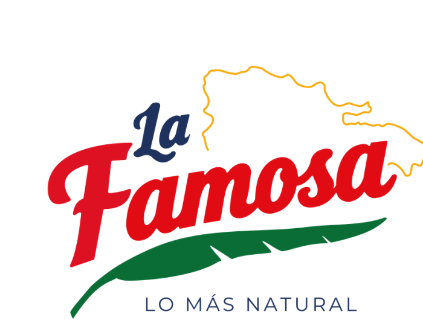
Proyecto de tesis de grado — Rebranding de La Famosa, marca dominicana de alimentos parte de Peravia Industrial desde 1963.
Ver el proyecto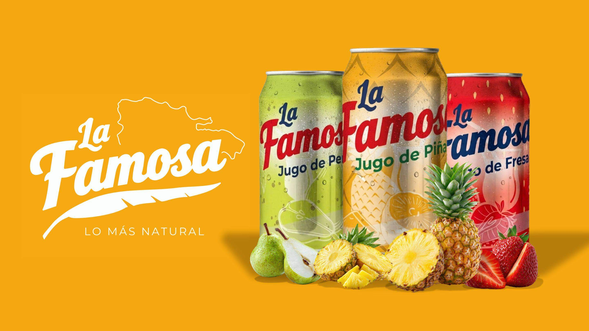
01
Desde 1963, formando parte de las mesas dominicanas, llevando productos que combinan calidad, tradición y el sabor que nos identifica.
La Famosa inicia su trayectoria como parte de Peravia Industrial, construyendo desde sus primeros años una identidad vinculada a la producción de alimentos y al desarrollo agroindustrial dominicano. A lo largo de las décadas, la marca ha ampliado su presencia y su oferta de productos, manteniendo como parte de su esencia el compromiso con la calidad y las familias dominicanas.
Actualmente, La Famosa cuenta con una amplia variedad de productos destinados al consumo cotidiano, manteniendo su presencia en los hogares dominicanos mientras busca evolucionar junto a las nuevas generaciones.
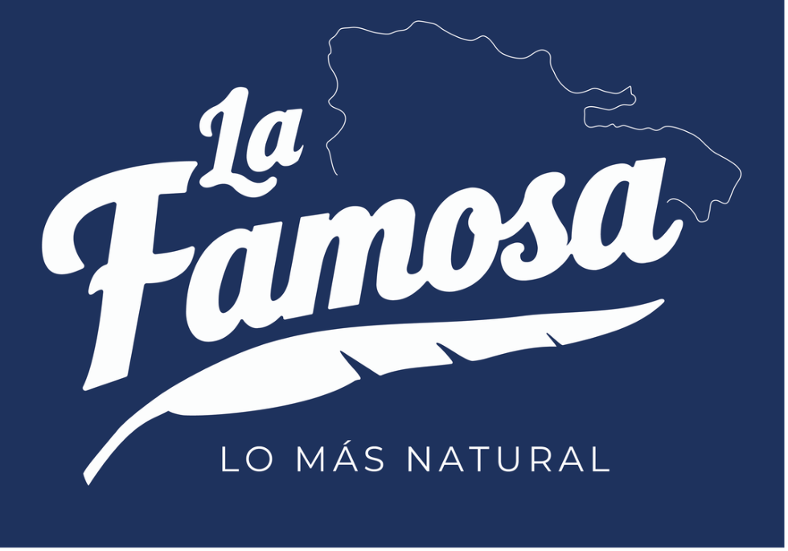
02
El logotipo se construye para funcionar con consistencia sobre los tres colores principales de la identidad, manteniendo siempre legibilidad y carácter.
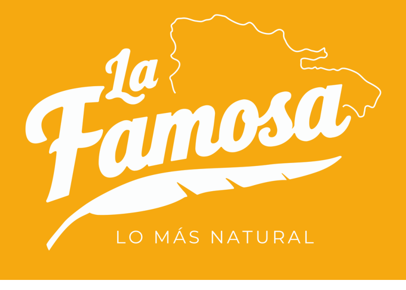
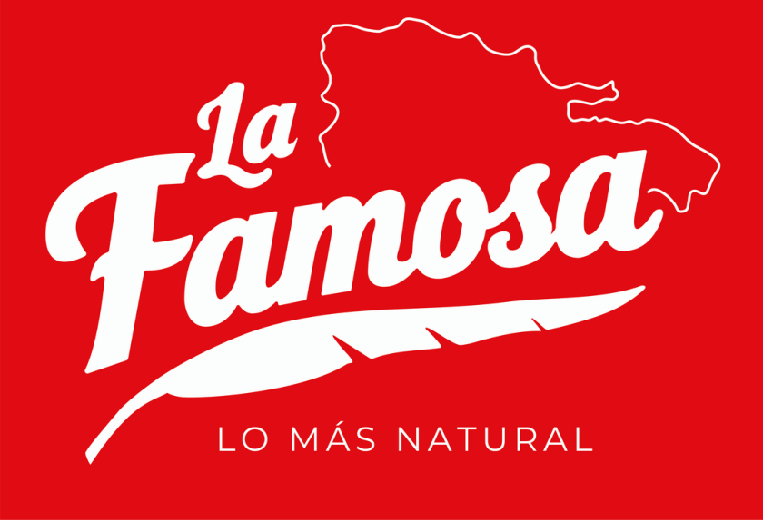
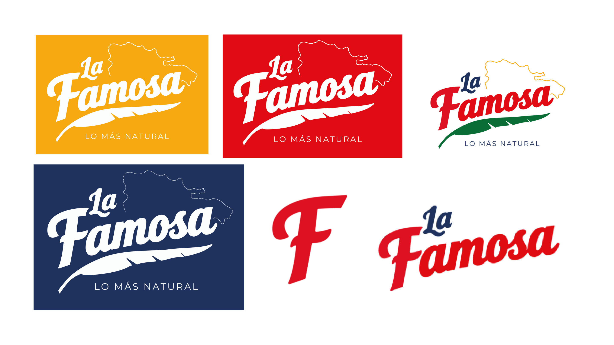
03
Catchup, aceite de oliva, vegetales enlatados y jugos — la línea completa reformulada bajo un mismo sistema visual.
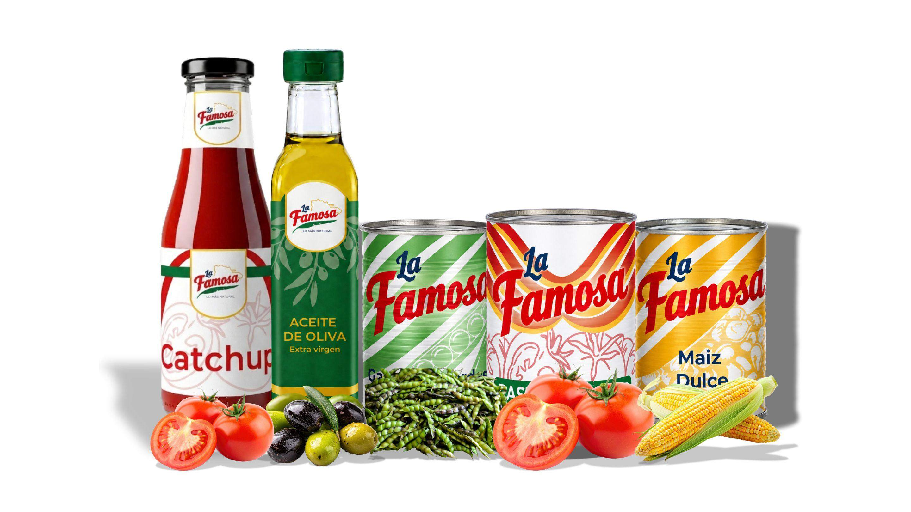
La receta de siempre, en un envase que habla el mismo idioma de marca en cada anaquel.
Etiqueta renovada que conserva la calidez artesanal del producto original.
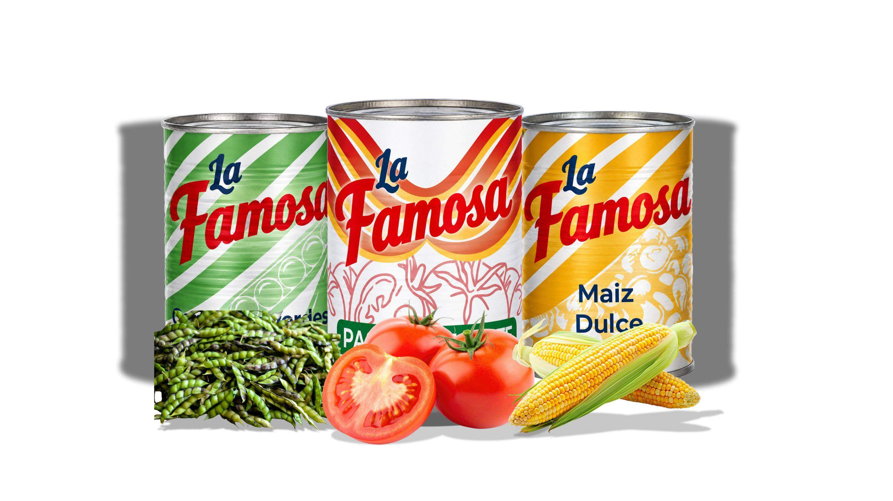
Habichuelas y vainitas verdes, pasta de tomate, maíz dulce y guandules.
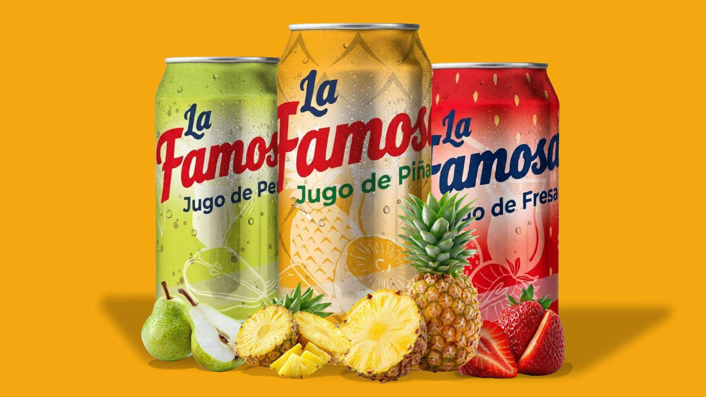
Pera, piña y fresa — sabor natural en un formato fresco y contemporáneo.
04
El sistema se extiende más allá del empaque: uniformes, vehículos de reparto, credenciales y publicidad exterior.
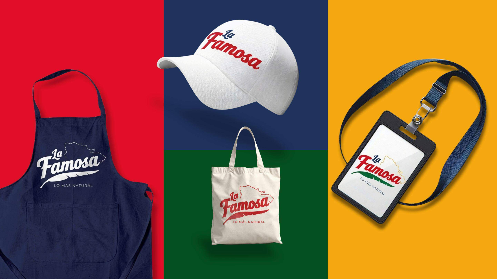
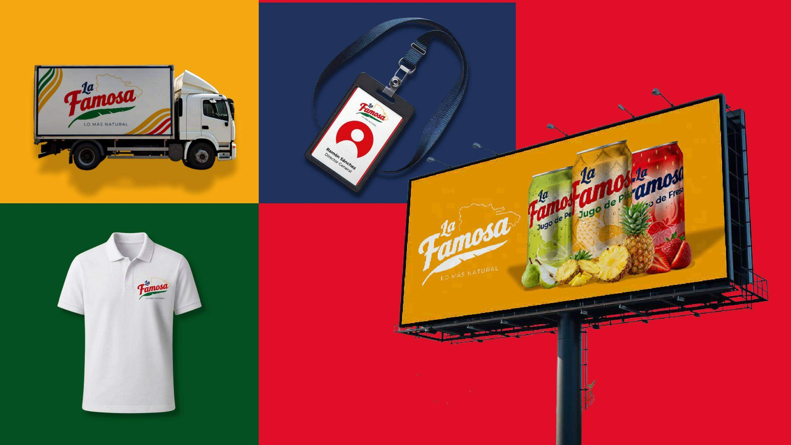
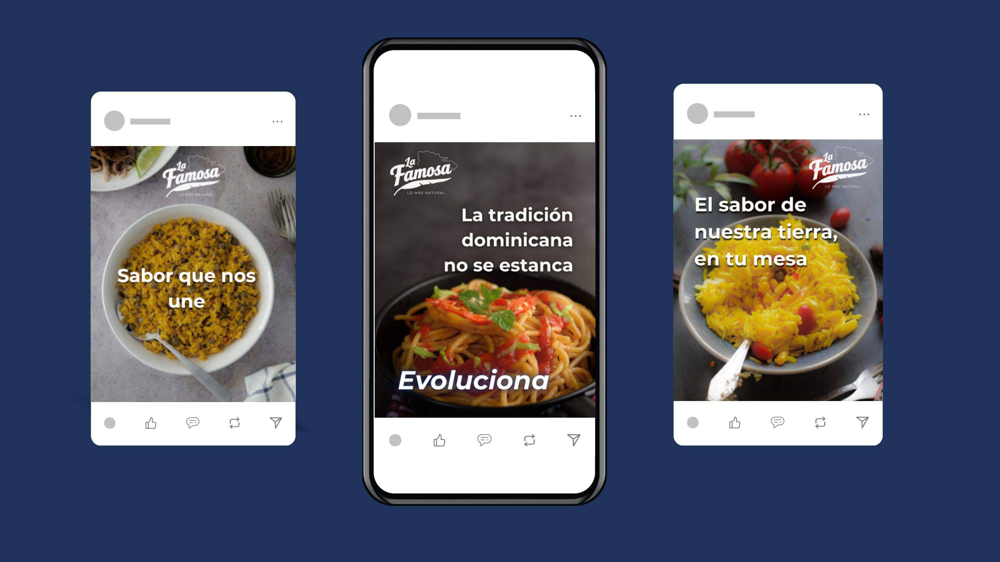
05
Tres mensajes que llevan la esencia de la marca a un tono cercano y contemporáneo.
“Sabor que nos une”
“La tradición dominicana no se estanca… evoluciona”
“El sabor de nuestra tierra, en tu mesa”
Proyecto académico — 2026